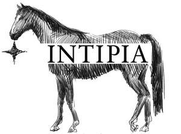

Trade Mark Journal No.2025/037 12 September 2025
UK00004256147 29 August 2025 (3,4,8,16,18,20,21,24,25,28)

- Class 3
- Air fragrance reed diffusers; Air fragrancing preparations; Beauty masks; Cleaning preparations; Cleansing milk for toilet purposes; Cosmetic preparations for skin care; Cosmetics; Cosmetics for animals; Essential oils; Hair conditioners; Hair dyes; Nail polish; Perfumes; Shampoos; Cotton wool impregnated with make-up removing preparations; Sunscreen preparations; Toothpaste; Skin cream; Eye cream; Essences for skin care.
- Class 4
- Beeswax; Candles; Dust removing preparations; Electrical energy; Firelighters; Fuel with an alcohol base; Grease for leather; Lubricating oil; Ozocerite; Mineral fuel; Perfumed candles; Wax for skis; Lubricants; Tapers; Ceresine.
- Class 8
- Abrading instruments [hand instruments]; Agricultural implements, hand-operated; Awls; Beard clippers; Blade sharpening instruments; Fire irons; Flat irons; Fulling tools [hand tools]; Garden tools, hand-operated; Graving tools [hand tools]; Hair clippers for animals [hand instruments]; Hand tools, hand-operated; Insecticide vaporizers [hand tools]; Knife handles; Knives; Manicure sets; Scissors; Tableware [knives, forks and spoons]; Tweezers; Depilation appliances, electric and non-electric.
- Class 16
- Adhesive tapes for stationery or household purposes; Bookmarks; Books; Place mats of paper; Calendars; Desktop cabinets for stationery [office requisites]; Drawing materials; Modelling materials; Packing [cushioning, stuffing] materials of paper or cardboard; Plastic film for wrapping; Cards; Ink; Note books; Paper; Pictures; Printed matter; Stapling presses [office requisites]; Stationery; Tissues of paper for removing make-up; Writing instruments.
- Class 18
- Animal skins; Pocket wallets; Baggage tags; Tool bags, empty; Bags; Briefcases; Canes; Clothing for pets; Collars for animals; Fur; Handbags; Harness fittings; Mountaineering sticks; Leathercloth; Suitcases; Trimmings of leather for furniture; Trunks [luggage]; Umbrellas; Credit card cases [wallets]; Reusable shopping bags.
- Class 20
- Bolsters; Coatstands; Coffins; Cushions; Deck chairs; Display boards; Dog kennels; Furniture; Mirrors [looking glasses]; Office furniture; Picture frames; Shelving units; Sleeping pads; Stools; Tables; Wood ribbon; Work benches; Works of art of wood, wax, plaster or plastic; Stuffed animals; Bins, not of metal.
- Class 21
- Table plates; Place mats, not of paper or textile; Basins [receptacles]; Bowls [basins]; Dispensers for paper towels; Brushes; Chopsticks; Combs; Cosmetic utensils; Crystal [glassware]; Cups; Make-up removing appliances; Drinking bottles for sports; Kitchen utensils; Porcelain ware; Tea services [tableware]; Toothbrushes; Vacuum bottles; Vases.
- Class 24
- Bath linen, except clothing; Bed blankets; Bed linen; Bed covers; Curtains of textile or plastic; Household linen; Fabric; Felt; Cloth; Flags of textile or plastic; Non-woven textile fabrics; Picnic blankets; Place mats of textile; Quilts; Shrouds; Table linen, not of paper; Textile material; Silk [cloth]; Loose covers for furniture; Mosquito nets.
- Class 25
- Albs; Bath robes; Headwear; Footwear; Girdles; Gloves [clothing]; Hosiery; Layettes [clothing]; Clothing; Pajamas; Scarves; Adhesive bras; Sleep masks; Sports jerseys; Swimsuits; Tee-shirts; Underwear; Underpants; Waterproof clothing; Shawls.
- Class 28
- Archery implements; Body-training apparatus; Machines for physical exercises; Protective paddings [parts of sports suits]; Boxing gloves; Board games; Climbers' harness; Dolls; Dolls' clothes; Masks [playthings]; Ornaments for Christmas trees, except lights, candles and confectionery; Playing cards; Rackets; Fishing tackle; Skateboards; Toys; Conjuring apparatus; Games; Knee guards [sports articles]; Golf clubs.
QIAN LIU
Representative: PROVIK LIMITED